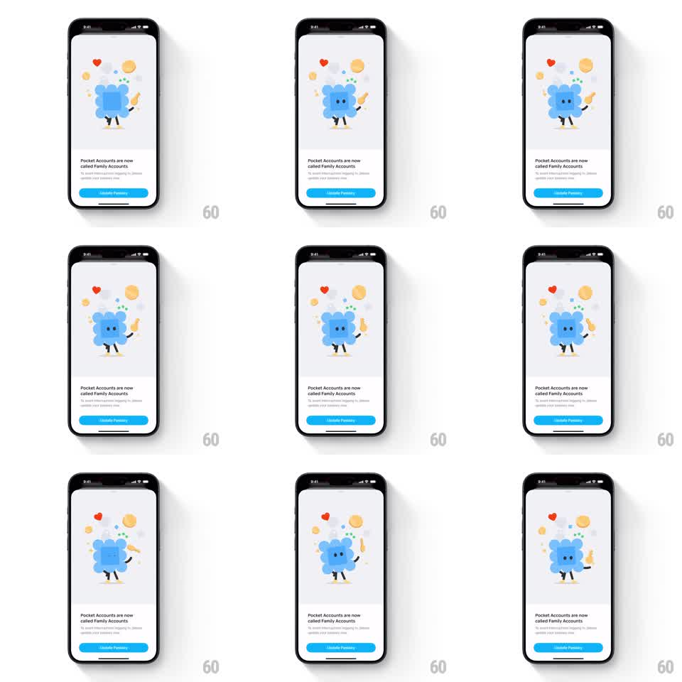

Media
Frame-by-frame

Rebuild this animation 1:1: Family's accounts rename screen - a looping idle of a blue scalloped-edge mascot holding a golden key, surrounded by pulsing and rotating decorative elements (a red heart, yellow circles, dot clusters), above the text "Pocket Accounts are now called Family Accounts" and a blue "Update Family" button.

Rebuild this animation 1:1: Family's accounts rename screen - a looping idle of a blue scalloped-edge mascot holding a golden key, surrounded by pulsing and rotating decorative elements (a red heart, yellow circles, dot clusters), above the text "Pocket Accounts are now called Family Accounts" and a blue "Update Family" button. ## Integration Integration: stack-agnostic spec - springs given as stiffness/damping, timed motions as duration + curve; map every value to your framework and animation library of choice. ## Scene Light screen. Center top: a rounded-square blue mascot with a scalloped/blob edge, dot eyes and little legs, holding a golden key aloft in one hand. Around it: floating decorations - a red heart, a yellow-orange circle, small dot clusters and sparkles. Below: the headline "Pocket Accounts are now called Family Accounts", subcopy, and a blue "Update Family" button. ## Motion spec Pattern: looping mascot idle with orbiting decorations. - The mascot bobs gently (translateY +/-4pt, 2.4s sine) with a soft squash on each bob (scaleY 1 -> 0.97). - The key arm swings slowly (rotate +/-6deg around the shoulder, 3s sine), the key catching a glint every loop (shine sweep, 400ms). - Decorations orbit the mascot on a loose ring (20s per revolution, linear), each pulsing in scale (0.9 -> 1.1, own phase) and the heart beating double-time (two quick pulses, 800ms cycle). - Dot clusters twinkle (opacity 0.4 -> 1, random 1-2s phases). - Text and button are static; the illustration loops forever. ## Calibration - The mood is adorable and calm - nothing moves faster than the heartbeat. - The key glint is the one accent beat per loop; keep it brief. ## Reduced motion Static illustration with all elements in place. ## Don't miss - The mascot's scalloped edge wobbles slightly with the bob (edge radius breathing). - The heart is the only red element; the rest of the palette is blue, yellow, and gold.